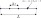
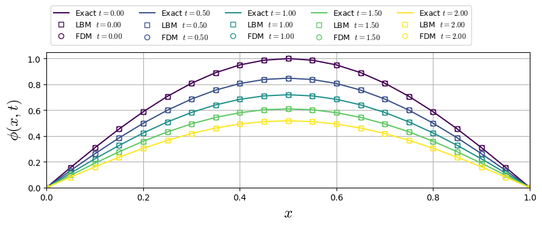

Diffusive Equation
The diffusive equation is described by
where \(\phi(\alpha,t)\) is a time and space dependent parameter and \(\nu\) is diffusive coeficient.
Numerical Discretization


Fig. 5 1D regular grid example for diffusive equation.
FDM Discretization
Discretizing the Eq. (18) through finite diference method, we have for forward time and central space (FTCS) discretizations:
for \(\nu\) constant and isolating the term \(u(x,t + \Delta_{t})\), we can describe the \(\phi\) time evolution:
Lattice Boltzmann Equation
Describing the problem through the BGK lattice Boltzmann equation (BGK-LB):
where the equilibrium distribution function is defined by
and the equilibrium moments are given by
Through Chapman–Enskog analysis, it is demonstrated that the first-order non-equilibrium moment describes the pressure gradient and, consequently, the average velocity:
Lattice Direction Moments
Chapmann-Enskog Analysis
Applying the Chapmann-Enskog procedure to LB equation, we expand the term \(f_{i}\left(\boldsymbol{x}+\boldsymbol{e}_i \Delta t, t+\Delta t\right)\) in a Taylor series to recover the derivative form of the equation, i.e.,
Rescaling the dimensionless form of the Eq. (21) in terms of the Knudsen number (\(Kn\)), we have
applying the asymptotic expansion in both the distribution function (\(f_{i}=f_{i}^{(0)}+Kn f_{i}^{(1)} + Kn^{2} f_{i}^{(2)}+\cdots\)) and time partial derivative (\(\partial_{t}=\partial_{t}^{(0)}+ Kn \partial_{t}^{(1)}+Kn^{2} \partial_{t}^{(2)}+\cdots\)), and separating the equation in orders up to the order \(Kn^{2}\):
Zero-Order Moment Balance
To retrieve the balance equation, we sum the Eq. (22) for \(Kn^{(1)}\) and \(Kn^{(2)}\) over \(\sum_{i=0} \):
and
or
where \(m^{(1)}_{\alpha}\) is the first-order moment of \(f_{i}^{(1)}\) and \(\sum_{i=1}f_{i}^{(j)}=0\) for \(j\geq 1\) due to imposition of \(\phi\) conservation. To compute the moment \(m^{(1)}_{\alpha}\), we multiply Eq. (22) by \(c_{i,\alpha}\) and sum over all lattice directions:
By substituting Eq. (24) into Eq. (23), we recover the Eq. (18), where \(\nu=c_{s}^{2}(\tau-1/2)\). In the regularized formulation of the lattice Boltzmann equation, the first-order correction is approximated as \(f_{i}^{(1)}\approx (f_{i}-f_{i}^{(0)})=f_{i}^{neq}\), where higher-order Knudsen moments are filtered out and the collision term is reformulated in terms of \(f_{i}^{neq}\).
Boundary Conditions
The boundary conditions for the lattices can be derived by solving a linear system of known moments.
D1Q2: |
Boundaries |
Layers |
|||
|---|---|---|---|---|---|
West |
East |
||||
Unknown \(f_{i}\) |
\(f_2=\phi_{e} - f_1\) |
\(f_1=\phi_{w} - f_2\) |
|||
D1Q3: |
Boundaries |
Layers |
|||
West |
East |
||||
Unknown \(f_{i}\) |
\(f_2=\phi_{e} - f_1 - f_0\) |
\(f_1=\phi_{w} - f_2 - f_0\) |
1st Benchmark: Single sine mode on a finite rod (Dirichlet)
PDE: \((\phi_t = \partial_{x}(\nu\partial_{x}\phi), (0<x<L,\ t>0)\)
BC: \((\phi(0,t)=\phi(L,t)=0)\)
IC: \(\phi(x,0)=\sin \left(\frac{\pi x}{L}\right)\)
Solution
LBM D1Q3 Solution (\(\tau=1\))
FDM Solution
Numerical and Analytical Comparisson
